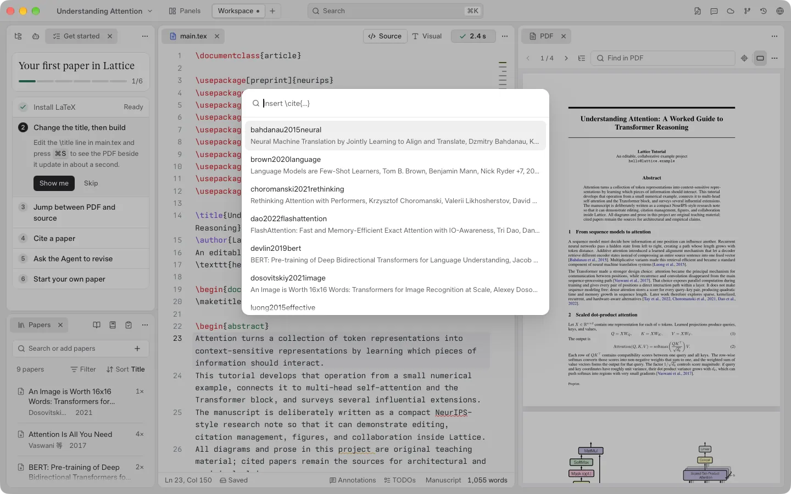
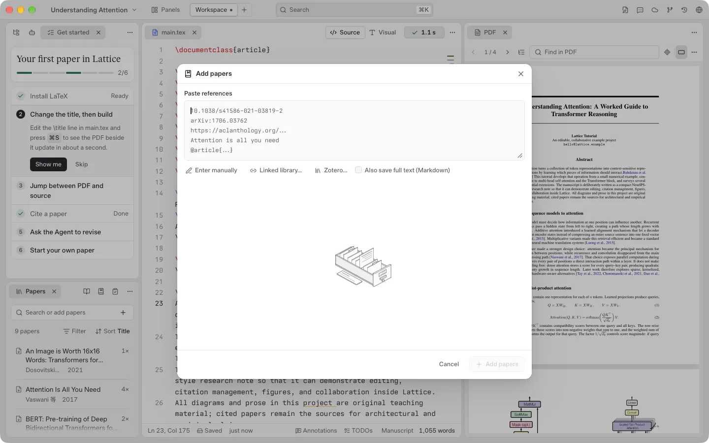

Citations and papers
Cite and reference while you type
⌘⇧KInsert citation: search your bibliography by key, title or author, then press Return. Lattice inserts\cite{key}at the cursor.⌘⇧LInsert reference: search the labels in your project (eq:,fig:,tab:and so on) and insert\ref{…}.- Hover a
\citekey to see the reference it points to.

The Papers library
The Papers panel (⌘⌥2) holds the papers this project cites, with how many times each is cited. Open one to read it beside your draft, filter and sort the list, or drag it into the editor to cite it.
To add papers, click + next to the Papers search and paste anything you have: DOIs, arXiv IDs, links, titles or whole BibTeX entries, one per line. Then choose Add papers. Lattice looks each one up and writes it into your .bib file.

Other ways in, from the same sheet:
- Enter manually: type the fields yourself.
- Linked library…: link a
.bibexported from Zotero, Paperpile or another manager, and take in its later changes after you review them. - Also save full text (Markdown): keep a readable copy of each paper in the project.
Check references (in the Papers panel and the command palette) audits your bibliography against Crossref and lists what looks wrong, one finding at a time.
Zotero
You don't need to change anything in Zotero, and it can be open or closed.
- In Add papers, choose Zotero….
- Open My Library or a folder; turn on Include subfolders to see everything below it.
- Tick the papers you want, or Select all, and choose Add N papers. Papers already in the library show In Papers.
Annotations you made on a paper's PDF in Zotero come along into its note (notes/<key>.md), each with a link to its page. Lattice only reads from Zotero; it never writes back. If Lattice can't find your library, choose its folder with Choose Zotero folder…. More detail, including connecting Zotero to the Agent, is in Zotero, Heptabase and the Agent panel.